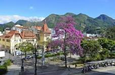
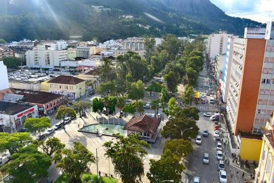

Descubra Nova Friburgo
Nova Friburgo é um município localizado no estado do Rio de Janeiro, Brasil. A cidade foi fundada em 1818, com a chegada de colonizadores suíços, e se desenvolveu como uma colônia agrícola. A população é composta por aproximadamente 190.084 habitantes, e a cidade é conhecida por sua Mata Atlântica e por ser a cidade mais fria do estado. As principais atividades econômicas incluem indústria metalúrgica, moda íntima, olericultura e turismo. Nova Friburgo também é famosa por sua Mata Atlântica, que proporciona um clima fresco e é um importante ecossistema para a região.

